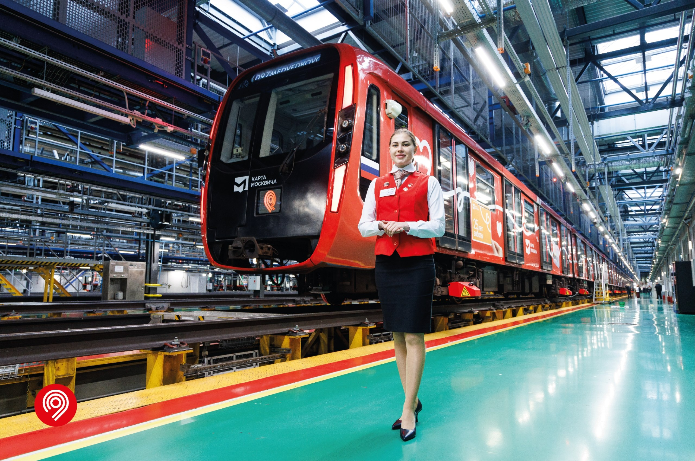

Новость
🎉 Встречайте тематический поезд в честь 25-летия карты москвича!
На Калужско-Рижскую линию вышел новый тематический состав, посвящённый 25-летию социальной карты москвича. Поезд, оформленный на базе модели «Москва 2020» (81-775), будет курсировать полгода.
Пассажиры поезда смогут:
- 🔹 Изучить историю карты и ее развития.
- 🔹 Увидеть, кто стоит за этим масштабным проектом и как производят карту сегодня.
- 🔹 Познакомиться с ее возможностями.
- 🔹 Узнать неожиданные факты: какие фамилии чаще всего встречаются среди держателей карт и что общего между первым впечатлением о незнакомом человеке и упаковкой карты москвича.
В каждом вагоне также можно проследить, как за последние 25 лет менялись Москва и повседневные привычки ее жителей.

📌 ТЧ-22 "Аминьевское"
Тематический состав «Карте Москвича — 25 лет!».
«Под руководством Мэра Москвы Сергея Собянина Москва стала мировым лидером по количеству способов оплаты проезда. Одна из наших главных задач — сделать каждую поездку максимально комфортной для всех пассажиров, в том числе для людей с правом льготного или бесплатного проезда. Совместно с коллегами из столичного Департамента информационных технологий реализовали несколько удобных сервисов для владельцев карт москвича. Например, пассажиры совершили уже более 7,5 млн проходов в городской транспорт по биометрии с привязанной картой москвича. А чтобы отслеживать историю поездок и покупать билеты в пару кликов, можно привязать карту в приложении «Метро Москвы». Теперь запустили новый тематический поезд, где жители столицы смогут познакомиться с историей развития карты и ее возможностями»
— Максим Ликсутов